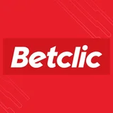

High traffic
99.99% crash-free rate maintained on apps with millions of users: Betclic (5.5M), Coyote (5M+).
Senior iOS Developer. Freelance or full-time.
Augmented by agentic AI, when it helps.
Apps I’ve worked on

BetclicFreelance senior iOS developer. I design and ship scalable, stable applications, from architecture all the way to App Store release. Clients: Meetic, Betclic, Pronosoft, Coyote, Lectra.
99.99% crash-free rate maintained on apps with millions of users: Betclic (5.5M), Coyote (5M+).
At Betclic, my work contributed directly to improving user retention metrics.
Objective-C → Swift, MVC → MVVM / Clean Architecture, SwiftUI / UIKit coexistence on legacy codebases.
Architecture, CI/CD, automated testing, best practices (SOLID, code review, SwiftLint, Periphery).
Claude Code and multi-agent workflows, only when it helps and the client approves. AI assists, I stay in control: every line I ship is reviewed, tested and owned.
Coaching junior developers on iOS fundamentals, technical lead for the team.
ESARC Evolution — Software Architect, Computer Science
2007 – 2012